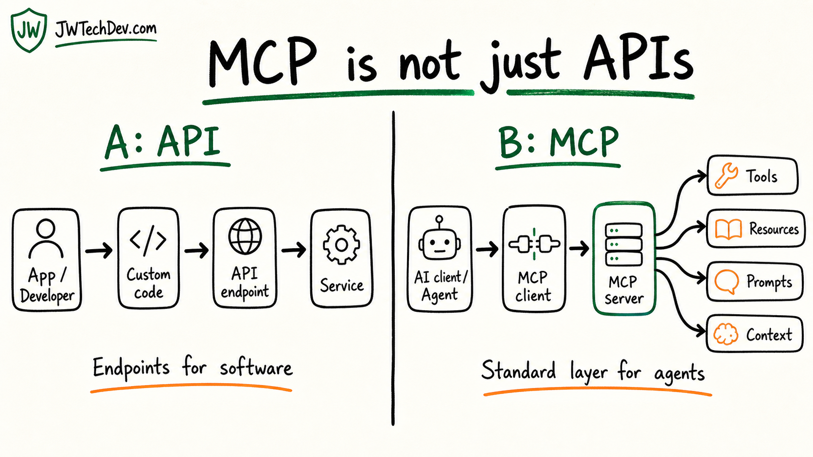

MCP is not just a garbage API
A troll comment can still be a useful whiteboard moment. MCP and APIs are related, but they are not the same layer.

Quick answer
MCP is not a replacement for APIs. APIs expose capabilities from a service. MCP gives AI clients a standard way to discover and use tools, resources, prompts, context, and metadata. In many real systems, an MCP server still calls normal APIs underneath.
The comment is funny, but the confusion is real
Somebody looked at MCP and said it was basically a garbage version of APIs.
I get why that take exists. If you squint hard enough, both APIs and MCP involve one system asking another system to do something. Both can move data. Both can trigger actions. Both can require authentication. Both can break when the system around them is designed poorly.
But saying MCP is just an API misses the point.
The better question is: who is the interface designed for?
Side A: What APIs are good at
APIs are how software talks to software.
A developer reads documentation, chooses an endpoint, writes integration code, handles authentication, shapes the request, parses the response, handles errors, and decides what the application should do next.
That is powerful. It is also custom work.
If you integrate ten services, you usually learn ten different documentation styles, auth patterns, data shapes, rate limits, and operational quirks.
APIs are still the foundation. MCP does not erase that.
Side B: What MCP adds
MCP is different because it is designed around AI clients and agents.
Instead of every AI app needing one-off glue for every tool, MCP gives the client a standard way to discover what a server offers.
That can include tools the model can call, resources the model can read, prompts or workflow templates, capability metadata, authorization boundaries, and context passed with a request.
An API says: here are endpoints your application can call.
MCP says: here are the tools, resources, prompts, and context an AI client can understand and use through a consistent protocol.
The clean mental model
A: Traditional API
- Built for software integrations.
- Developer reads docs and writes custom glue.
- Endpoint-first.
- Often called directly by application code.
B: MCP
- Built for AI client and agent workflows.
- Client can discover tools, resources, prompts, and capabilities.
- Tool, resource, and prompt-first.
- Often wraps APIs so agents can use them safely.
APIs connect software to services.
MCP connects AI clients to tools, resources, prompts, and context.
Why this matters for builders
An MCP server can absolutely call a normal API underneath. For example, an MCP server might expose a search tool to an AI client, while the server itself calls a documentation API, database, search index, or internal service behind the scenes.
That does not make MCP fake. It means MCP is an adapter layer.
Once AI workflows touch real systems, the hard part is not just whether the model can call an endpoint. The hard part is deciding what the model is allowed to see, what it can change, which tools are read-only, which actions need human approval, how actions are logged, and how the system recovers if a later step fails.
That is why MCP matters as part of AI infrastructure. It gives builders a common pattern for connecting agents to capabilities without pretending every integration should be hand-wired from scratch.
The bottom line
If your takeaway is "MCP is just APIs," you are looking at the transport and missing the product shape.
APIs are how services expose capabilities.
MCP is how AI clients discover and use capabilities through tools, resources, prompts, and context.
In practical terms: APIs are still the engine room. MCP is the standardized agent-facing control panel.
Sources checked
Want the starter kit?
Grab the free JWTechDev.com starter kit if you want a practical way to connect cloud basics, AI workflows, and approval gates.
Get resources